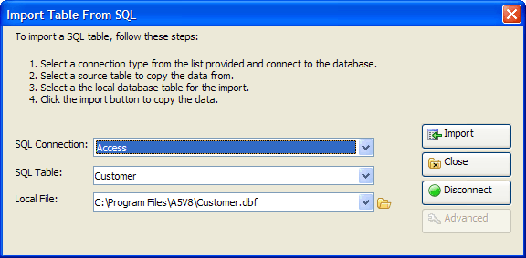

Import Table from SQL Dialog
The Import Table from SQL dialog helps you import a SQL back-end table to an Alpha Anywhere .DBF table.

Procedure
Select a back-end SQL database type from the SQL Connection list.
Click Connect to display the Connect to Database dialog.
Navigate to and select a database in the File Name control.
Enter the other values required to access the database.
Click Test Connection.
Click OK if the connection succeeded.
Select the SQL table to import from the SQL Table control.
Select the local Alpha Anywhere .DBF table to create from the Local File list or click
 to navigate to, name, or select a table to overwrite.
to navigate to, name, or select a table to overwrite.Optionally, click Advanced to display ...
Click Import.
Click Close to exit.
Limitations
Desktop applications only.
See Also